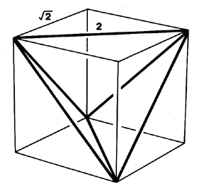

|  |
| Fig. 986.210 Diagonal of Cube as Unity in Synergetic Geometry: In synergetic geometry mensural unity commences with the tetra edge as prime vector. Unity is taken not from the cube edge but from the edge of one of the two tetra that structure it. (Compare Fig. 463.01.) Proportionality exactly known to us is not required in nature's structuring. Parts have no existence independent of the polyhedra they constitute. |